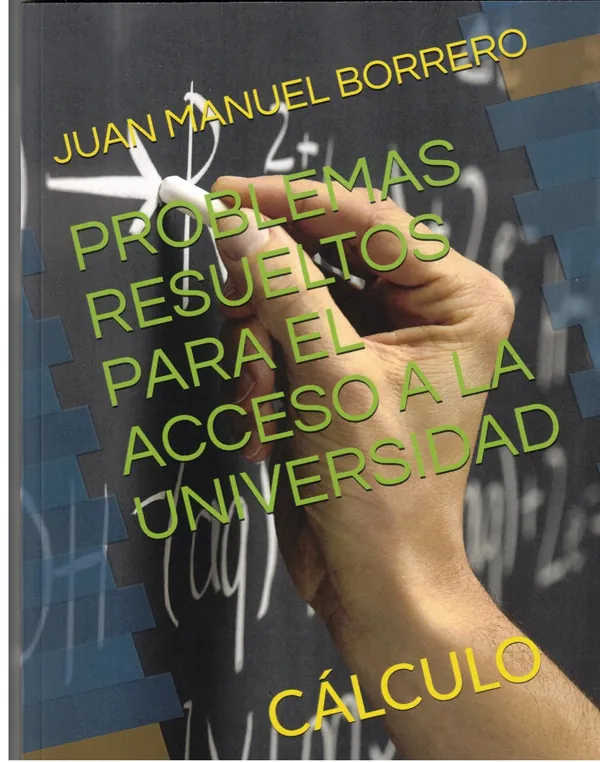

Relatos heterodoxos
Cuadernos de Al-Ándalus
Ficha del libro →Inicio Obra
Narrativa, ensayo, columnas de prensa y libros didácticos: la búsqueda de la verdad, la identidad y el misterio.
En 2001 publicó Su nombre era nadie, obra galardonada con el III Premio Internacional de Relatos «Canaleta»12. El título evoca la figura de Ulises en la mitología clásica y refleja los intereses narrativos del autor: la identidad humana y la construcción simbólica de los personajes, pululando, en esta ocasión, en las labores de la minería onubense de finales del XVIII, plena de conflictos sociales. Su publicación contribuyó a reforzar su prestigio dentro del género narrativo breve.
Tras algunos años de menor actividad editorial, el escritor regresó con fuerza en la década de 2010. En 2015 apareció En las riberas del Aqueronte13, novela cuyo título remite al río mitológico asociado al mundo de los muertos en la tradición griega. La obra profundiza en cuestiones existenciales, religiosas y metafísicas, integradas en una trama policiaca para desentrañar las actividades criminales de una secta demoníaca, tema este recurrente en la producción de Borrero.
Posteriormente (2018) publicó Los manuscritos de la lechuza14, obra inspirada parcialmente en un relato premiado años antes15 y que combina elementos de misterio, simbolismo esotérico y reflexión cultural.
Lo especial de su obra queda patente en el interés demostrado —no solo a nivel nacional— por la investigación literaria en el ámbito universitario16.
Además de la narrativa, Juan Manuel Borrero ha cultivado el ensayo. Una muestra de ello es Aproximación al hombre mágico (2019)17, donde analiza aspectos relacionados con el pensamiento simbólico, las creencias y la dimensión espiritual del individuo. Este interés por los aspectos ocultos o trascendentes de la experiencia humana aparece también en buena parte de sus novelas, lo que dota a su obra de una notable coherencia temática.
Paralelamente a las actividades puramente literarias, pero concomitantes con ellas, participó en presentaciones y congresos literarios18, pliegos de creación19 y pregonó alguna importante Feria del Libro20.
Otra faceta destacada de su producción es la actividad periodística. Durante años colaboró con distintos medios de comunicación y publicó artículos de opinión (Suplemento Cultural La Isla de Europa Sur; El Mundo, edición para Huelva). Una selección de estos textos fue recopilada en Letra capitular21, obra que permite conocer una dimensión más personal y ensayística del autor. En su columna semanal El rincón del fraile (2005/06) se abordaban temas culturales, políticos, sociales y literarios desde una perspectiva crítica y reflexiva.


Resumiendo, la obra de este autor destaca por su variedad de géneros, la riqueza de sus referencias culturales y filosóficas y su capacidad para combinar pensamiento racional e imaginación. Sus novelas y relatos muestran un especial interés por los aspectos simbólicos y trascendentes de la existencia humana, mientras que sus ensayos y artículos reflejan una profunda inquietud intelectual. Gracias a ello, se ha consolidado como una voz singular dentro de la literatura andaluza contemporánea27.
Cuadernos de Al-Ándalus
Ficha del libro →
Ediciones del Centro Andaluz
Ficha del libro →
Espasa Calpe · Nueva Austral
Ficha del libro →Editorial Essan
Ficha del libro →Círculo Rojo
Ficha del libro →Apeyron Ediciones
Ficha del libro →Círculo Rojo
Ficha del libro →Independently Published
Ficha del libro →Independently Published
Ficha del libro →Editorial Onuba
Ficha del libro →Independently Published
Ficha del libro →Álgebra Lineal · Cálculo · Geometría
Ver referencias →Álgebra · Funciones · Trigonometría · Progresiones · Geometría
Ver referencias →